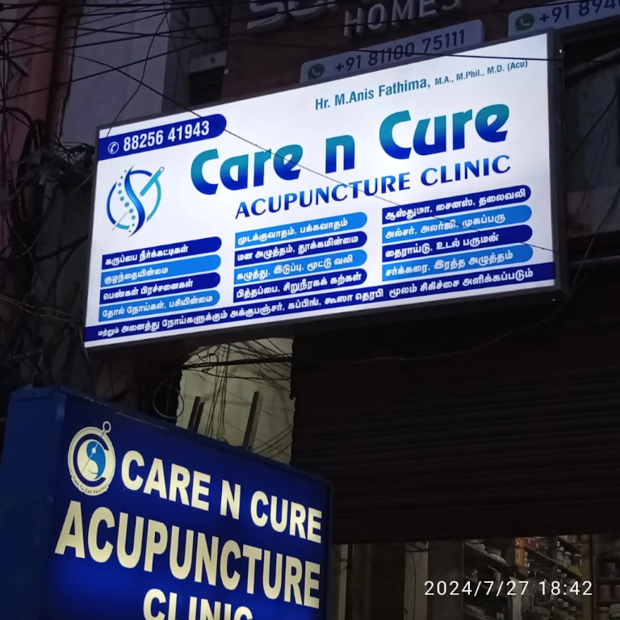
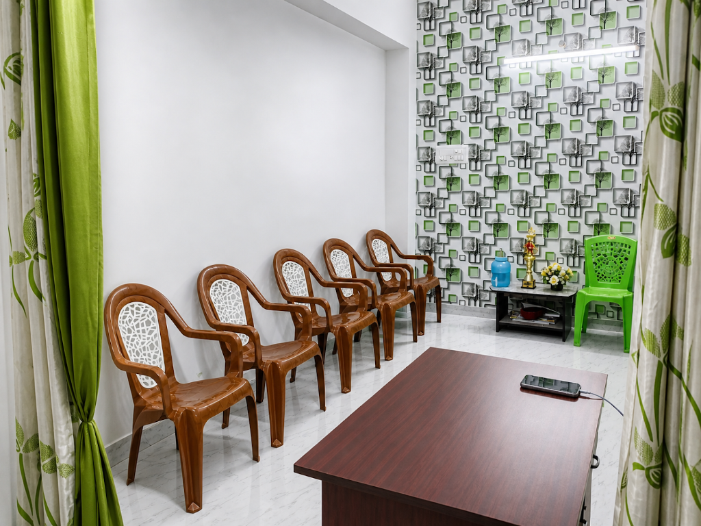
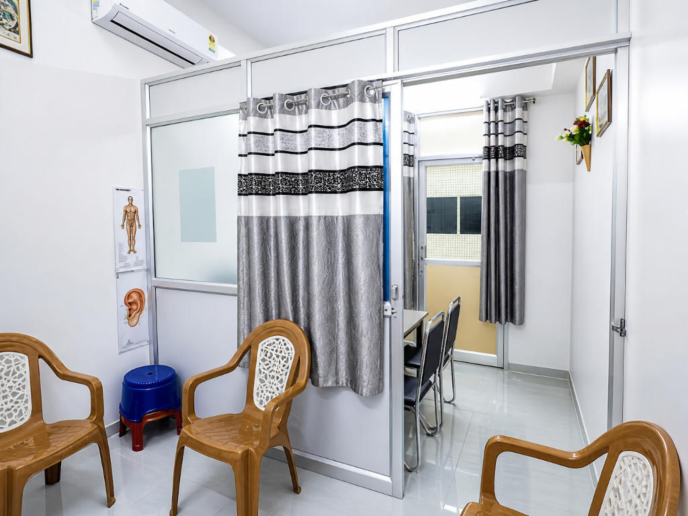
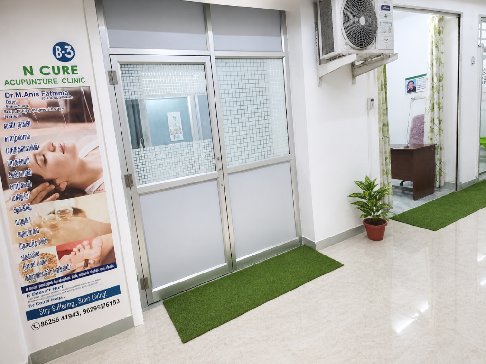
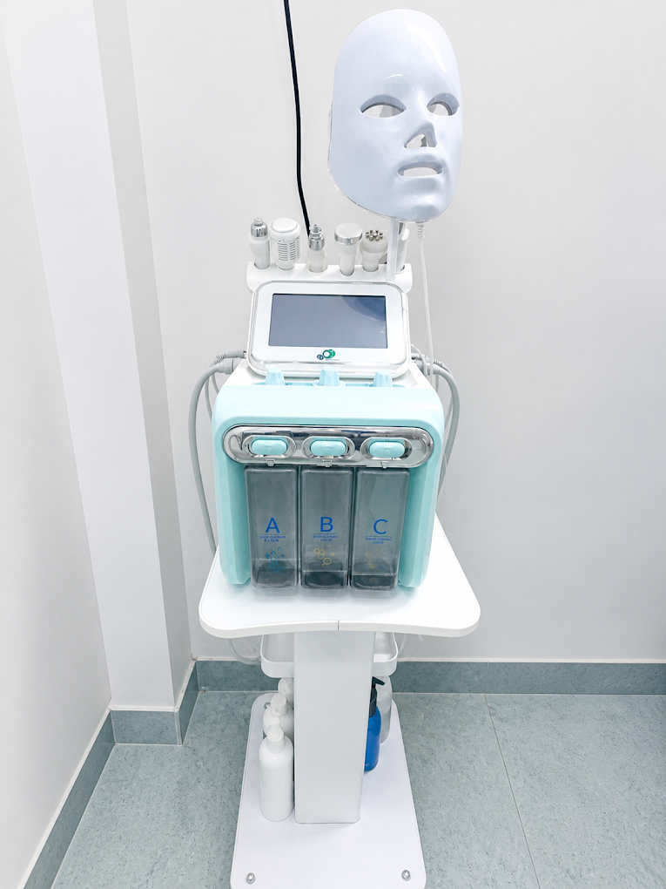
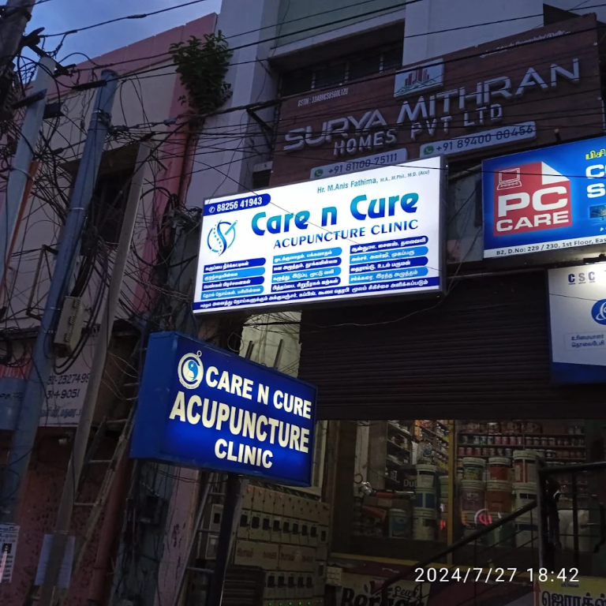

01
Whole-person care
We focus on your physical comfort, daily rhythms, and overall wellness so treatment supports lasting balance.
Holistic wellness
At Care n Cure Acupuncture Clinic in Madurai, we blend traditional acupuncture, cupping, herbal wellness, and supportive guidance to help you feel more aligned, rested, and resilient.

Care n Cure Acupuncture Clinic, MaduraiWe focus on your physical comfort, daily rhythms, and overall wellness so treatment supports lasting balance.
Acupuncture, cupping, and herbal guidance are blended thoughtfully for a personalized healing experience.
Every visit is designed to feel supportive, informative, and gentle from the moment you walk in.
Welcome to Care n Cure Acupuncture Clinic, Madurai’s trusted destination for holistic healing and wellness—just steps from the heart of the city.
We specialize in authentic acupuncture treatments rooted in traditional wisdom and informed by modern understanding. Our clinic offers personalized care for a wide range of health concerns, including chronic conditions, women’s health, pain management, mental wellness, skin and beauty, and more.
We also offer Hijama (wet cupping therapy) and traditional cupping treatments as complementary wellness services. As a certified Wellness Coach, our founder brings a compassionate, results-focused approach to every treatment. We believe in empowering our clients with knowledge, personalized care, and natural solutions that support balance and vitality.
Explore our consultation room, treatment spaces, clinic entrance, and wellness equipment through the clinic's own photographs.





A calming acupoint often used to support emotional balance, stress relief, and overall flow.
Traditional acupuncture tailored to your comfort, body patterns, and wellness goals.
A gentle complementary practice that may support circulation and recovery.
Personalized guidance around herbal support and daily wellbeing practices.
Holistic guidance for sleep, stress management, routines, and mindful daily living.
A gentle complementary facial wellness practice discussed around your comfort and goals.
Non-invasive pressure-point support offered as part of an individualized wellness conversation.
Wet cupping therapy explained carefully, including suitability, hygiene, aftercare and comfort.
A foot-focused complementary wellness practice tailored to your comfort and discussed before care.
We believe acupuncture works best when it feels deeply supportive and clearly explained. Every recommendation is shaped around your goals, comfort, and daily life.
We take time to understand your symptoms, lifestyle, and what wellness means to you.
You are never rushed. We explain the approach, treatment style, and what to expect in simple terms.
Our environment is designed for comfort and calm, helping you feel at ease throughout the session.
We aim to support sustainable progress, not just a quick fix. Your care plan evolves with you.
Practical, educational guidance from Care n Cure. These articles are for general information and do not replace advice from a qualified healthcare professional.
A first visit usually begins with a conversation about your health history, goals, comfort, and questions. Your practitioner can then explain an individualized approach and what to expect before treatment begins.
Book a consultationCupping is a complementary practice that uses cups on the skin. Ask your practitioner how the session works, whether it is appropriate for you, and how to discuss medicines or health conditions before care.
Ask our clinicBring a list of current medicines and relevant health information, wear comfortable clothing, and share your goals openly. Arriving with questions helps make your consultation clear and personal.
Plan your visitSome people explore acupuncture as part of a relaxation and wellness routine. A consultation can help you discuss sleep, tension, daily habits, comfort and whether this complementary approach fits your goals.
Read common questionsBefore a session, ask about the technique, hygiene practices, expected experience, aftercare and whether it is appropriate with your health history or medicines. Care should always be discussed with a qualified practitioner.
Ask the clinic teamLook for clear service information, transparent contact details, convenient opening hours, respectful consultations and a practitioner who explains options without promising guaranteed results.
Visit Care n Cure“The consultation felt calm and personal. I appreciated how gentle and clear the care was from the very first visit.”— Aditi, Madurai
“I came in feeling stressed and tired, and the treatment plan made me feel genuinely supported. It was very reassuring.”— Ramesh, Madurai
“The clinic environment is beautiful and peaceful. The whole experience was thoughtful and professional.”— Meena, Madurai
“I came here for a non-healing ulcer in my right leg, under the small toe. Within 10 days of acupuncture needling, the ulcer dried up. Cupping therapy and foot reflexology were also highly effective.”


“I had chest pain for many months and after getting treatment at Care n Cure Acupuncture Clinic, I felt much better. I am very happy with my experience and grateful to the clinic.”— Ragumath N, Madurai Patient-reported experience; individual results vary. This testimonial is not a medical guarantee.
“I took acupuncture treatment at Care n Cure Acupuncture Clinic for one month and felt positive changes in my fatty liver and PCOD concerns. Thank you so much.”— Tamil Selvi, Madurai Patient-reported experience; individual results vary. Please consult a qualified healthcare professional for diagnosis and treatment.
“I had a great experience at Care N Cure Acupuncture Clinic in Madurai. The care and support I received for sudden knee pain and general health were very reassuring.”— Sivakumar Surya, Madurai Patient-reported experience; individual results vary. This testimonial is not a medical guarantee.
“I came with shoulder pain and back pain and felt relief after treatment. My family also received care and had a good experience.”— Sameera Asmath, Madurai Patient-reported experience; individual results vary. This testimonial is not a medical guarantee.
“This was my first time trying cupping therapy. The treatment was comfortable, and I felt lighter and more relaxed after the session. I noticed improvement in my pain and stiffness.”— Angayarkanni K, Madurai Patient-reported experience; individual results vary. This testimonial is not a medical guarantee.
“We came for acupressure treatment for the first time. The doctor gave very good and proper treatment, and we had a positive experience.”— Lathika Sakthivel, Madurai Patient-reported experience; individual results vary. This testimonial is not a medical guarantee.
“We visited Care n Cure Acupuncture Clinic in Madurai and had a positive experience with the care and support provided.”— Hameedha Banu, Madurai Patient-reported experience; individual results vary. This testimonial is not a medical guarantee.
Patient stories describe individual experiences and are not a substitute for medical advice or a promise of results.
We make the process simple, comfortable, and transparent so you can feel confident about your care.
Your practitioner will discuss your goals, health history, and comfort level before recommending a personalized treatment approach.
No referral is required. You can book directly with the clinic and speak with the team about your needs.
Many people seek acupuncture for relaxation, tension relief, and overall wellness support. Your treatment plan is customized to your needs.
Yes. Care n Cure can discuss wellness support and practical guidance as part of a holistic, individualized care plan.
Care n Cure Acupuncture Clinic is in Madurai, Tamil Nadu. Use the Get directions link in the Visit our clinic section for Google Maps directions.
We are open Monday to Saturday, 9:00 AM to 8:00 PM. Call before visiting if you need help planning your appointment.
You can use the booking form, message Care n Cure on WhatsApp, or call +91 88256 41943.
Alongside acupuncture and cupping therapy, Care n Cure offers facial cupping, acupressure, Hijama and reflexology. A practitioner can discuss suitability for your individual needs.
Care n Cure offers acupuncture, cupping therapy including Hijama, herbal wellness guidance, wellness coaching, facial cupping, acupressure and reflexology. Each service is discussed with you beforehand and suitability depends on your individual needs.
A first consultation begins with a conversation about your health history, goals, questions and comfort level. The practitioner explains an individualized approach before any care begins. Bring relevant health information and a list of current medicines if applicable.
Care n Cure provides personalized complementary wellness care for people exploring acupuncture, cupping, acupressure, reflexology, facial cupping, herbal wellness or lifestyle guidance. Individual experiences vary, and the practitioner can discuss suitability during a consultation.
Share a few details and we’ll help you take the next step with a personalized appointment request.
Care n Cure Acupuncture Clinic, Madurai, Tamil Nadu
Mon - Sat: 9:00 AM - 8:00 PM